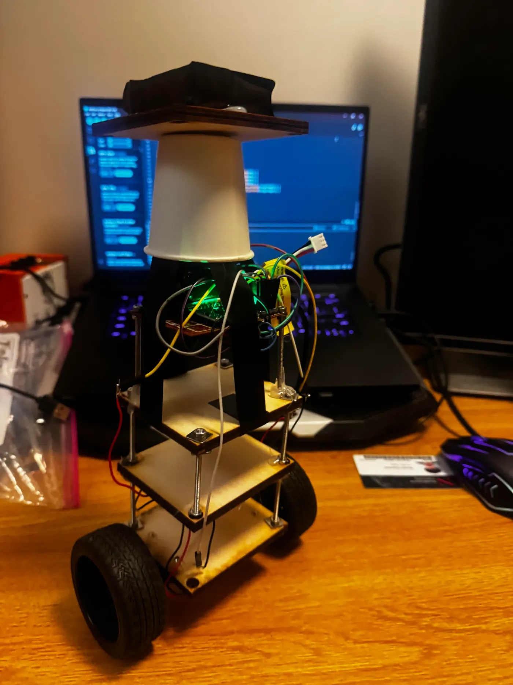
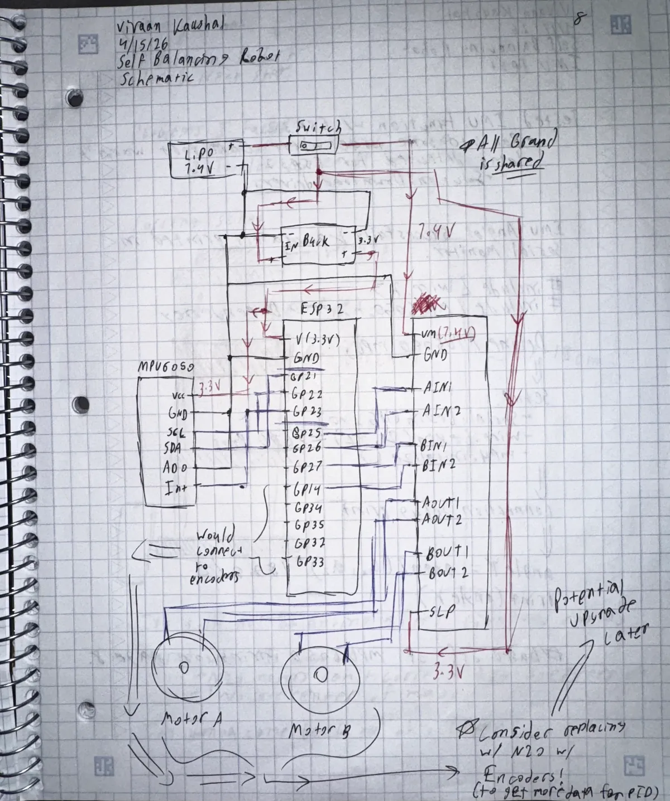
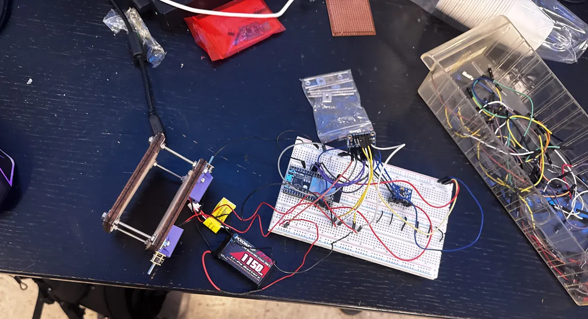
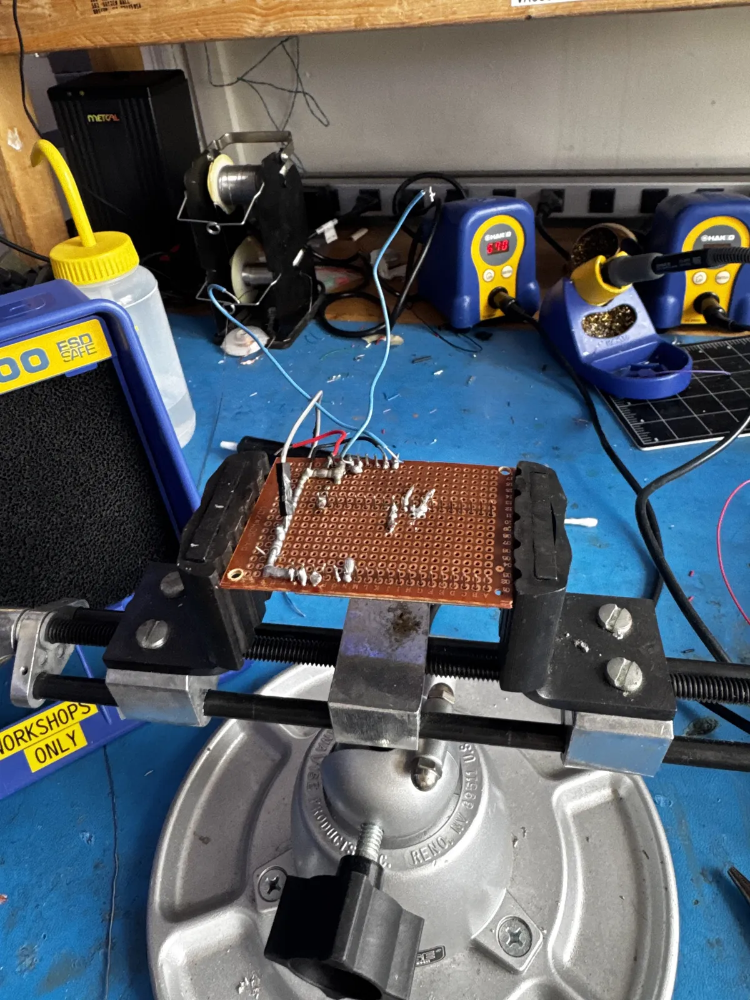
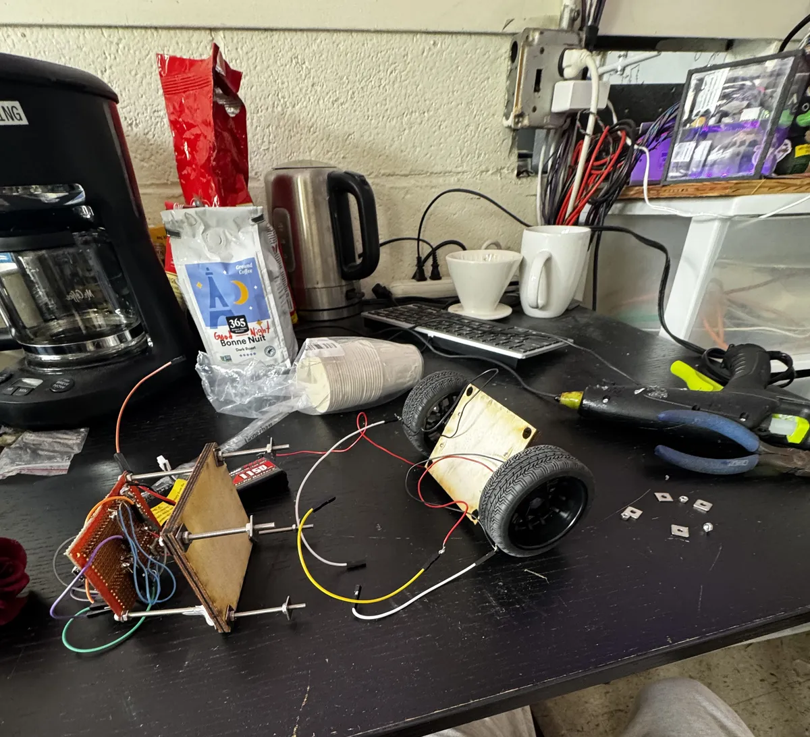

Electronics
Self Balancing Robot
A two-wheeled robot that balances itself on an ESP32 and MPU-6050, running a 200 Hz PID loop tunable live over Bluetooth.
- Project
- Two-wheeled self-balancing robot with PID control
- Author
- Vivaan
- Hardware
- ESP32 DevKit C, MPU-6050, DRV8833, N20 200RPM motors, 7.4V LiPo

§Table of Contents
- Project Overview
- Hardware Specifications
- Wiring Reference
- IMU Calibration Offsets
- Final Working Script
- Tuning Guide
- Build Logs
§Project Overview
A small two-wheeled self-balancing robot built from scratch. The robot implements an inverted pendulum control system — continuously reading tilt angle from an IMU and driving motors to stay balanced under its own centre of mass via a PID control loop.
Core concept: The robot is an upside-down pendulum. When it tips forward, the wheels drive forward to reposition under the centre of mass. When it tips backward, the wheels drive backward. The PID loop runs at 200Hz to continuously compute and apply corrections.
Key design decisions:
- ESP32 chosen over Arduino Nano for built-in Bluetooth, enabling live PID tuning without reflashing
- N20 motors chosen over steppers for faster response, lower idle power, and lighter weight
- 20kHz PWM frequency to reduce motor stiction at low duty cycles
- IMU calibration offsets hardcoded from dedicated calibration run for stable angle readings
- Hardware timer ISR at 200Hz guarantees consistent sample timing regardless of loop overhead
§Hardware Specification
| Component | Part | Notes |
|---|---|---|
| Microcontroller | ESP32 DevKit C | 240MHz dual-core, built-in Bluetooth |
| IMU | MPU-6050 (GY-521 breakout) | I2C, address 0x68 (AD0 → GND) |
| Motors | N20 6V 200RPM DC, plain 2-wire | No encoders — angle-only PID |
| Motor driver | DRV8833 breakout | SLP pin → 3.3V to enable |
| Buck converter | MP1584 | Set to 3.3V output |
| Battery | 7.4V 2S LiPo | VM direct to DRV8833 |
| Switch | E-Switch RA11131100 rocker | Inline on LiPo positive |
| Wheels | 65mm rubber, 3mm D-shaft |
§Wiring Reference

§Power chain
| From | To | Notes |
|---|---|---|
| LiPo positive | Switch input | Raw 7.4V |
| Switch output | Buck converter VIN | Switched 7.4V |
| Switch output | DRV8833 VM | Motor power, bypasses buck |
| Buck VOUT | ESP32 3V3 | 3.3V logic rail |
| Buck VOUT | MPU-6050 VCC | |
| Buck VOUT | DRV8833 SLP | Enables driver |
| LiPo negative | Common GND | |
| Buck GND | Common GND | |
| ESP32 GND | Common GND | |
| MPU-6050 GND | Common GND | |
| DRV8833 GND | Common GND |
§ESP32 pin assignments
| GPIO | Function | Connected to |
|---|---|---|
| GPIO 21 | SDA | MPU-6050 SDA |
| GPIO 22 | SCL | MPU-6050 SCL |
| GPIO 25 | AIN1 | DRV8833 AIN1 |
| GPIO 26 | AIN2 | DRV8833 AIN2 |
| GPIO 27 | BIN1 | DRV8833 BIN1 |
| GPIO 14 | BIN2 | DRV8833 BIN2 |
| 3V3 | Power out | MPU-6050 VCC, DRV8833 SLP |
| GND | Ground | Common GND rail |
§Motor connections
| DRV8833 pin | Connected to |
|---|---|
| AOUT1 | Motor A wire 1 |
| AOUT2 | Motor A wire 2 |
| BOUT1 | Motor B wire 1 |
| BOUT2 | Motor B wire 2 |
Note: Motor B is physically mirrored on the chassis. Both motors drive in the same direction when AIN and BIN signals match — no hardware flip needed, handled in software.
Critical: Buck converter GND must be wired to common rail even though input and output GND are the same node internally. Without it the 3.3V output has no return path.
§IMU Calibration Offsets
Calibrated using Luis Ródenas / Jeff Rowberg method. Robot placed flat on level surface, deadzone 15 for accelerometer, 5 for gyroscope.
| Offset | Value |
|---|---|
| ax_offset | 2048 |
| ay_offset | -475 |
| az_offset | 3256 |
| gx_offset | 58 |
| gy_offset | 51 |
| gz_offset | 27 |
Only Y accel, Z accel, and X gyro are applied in the balancing script — matching the reference robot implementation.
§Final Working Script
Based on ERL Engineering reference implementation using identical hardware (N20 200RPM, MPU-6050). Ported from Arduino Nano to ESP32 with hardware timer ISR replacing AVR Timer1.
#include <Wire.h>
#include <MPU6050.h>
MPU6050 mpu;
#define AIN1 25
#define AIN2 26
#define BIN1 27
#define BIN2 14
#define PWM_FREQ 20000 // 20kHz reduces N20 motor stiction
#define PWM_RES 8
// IMU calibration offsets — specific to this unit
#define Y_ACCEL_OFFSET -475
#define Z_ACCEL_OFFSET 3256
#define X_GYRO_OFFSET 58
// PID constants — from reference robot, same hardware
#define Kp 40.0
#define Kd 0.05
#define Ki 40.0
#define sampleTime 0.005 // 5ms = 200Hz
// Adjust target angle empirically — robot's true upright position
float targetAngle = -2.5;
int16_t accY, accZ, gyroX;
volatile int motorPower = 0;
volatile float accAngle, gyroAngle, currentAngle, prevAngle = 0;
volatile float error, errorSum = 0;
hw_timer_t *timer = NULL;
volatile bool doISR = false;
void IRAM_ATTR onTimer() {
doISR = true;
}
void setMotors(int power) {
power = constrain(power, -255, 255);
if (power > 0) {
ledcWrite(AIN1, power); ledcWrite(AIN2, 0);
ledcWrite(BIN1, power); ledcWrite(BIN2, 0);
} else if (power < 0) {
ledcWrite(AIN1, 0); ledcWrite(AIN2, -power);
ledcWrite(BIN1, 0); ledcWrite(BIN2, -power);
} else {
ledcWrite(AIN1, 0); ledcWrite(AIN2, 0);
ledcWrite(BIN1, 0); ledcWrite(BIN2, 0);
}
}
void setup() {
Serial.begin(115200);
Wire.begin(21, 22);
Wire.setClock(400000);
mpu.initialize();
mpu.setYAccelOffset(Y_ACCEL_OFFSET);
mpu.setZAccelOffset(Z_ACCEL_OFFSET);
mpu.setXGyroOffset(X_GYRO_OFFSET);
ledcAttach(AIN1, PWM_FREQ, PWM_RES);
ledcAttach(AIN2, PWM_FREQ, PWM_RES);
ledcAttach(BIN1, PWM_FREQ, PWM_RES);
ledcAttach(BIN2, PWM_FREQ, PWM_RES);
ledcWrite(AIN1, 0); ledcWrite(AIN2, 0);
ledcWrite(BIN1, 0); ledcWrite(BIN2, 0);
// hardware timer fires every 5ms (200Hz)
timer = timerBegin(1000000);
timerAttachInterrupt(timer, &onTimer);
timerAlarm(timer, 5000, true, 0);
Serial.println("Ready. y=status t/v=target");
}
void loop() {
if (doISR) {
doISR = false;
accY = mpu.getAccelerationY();
accZ = mpu.getAccelerationZ();
gyroX = mpu.getRotationX();
// complementary filter — 0.9934/0.0066 ratio from reference robot
accAngle = atan2(accY, accZ) * RAD_TO_DEG;
int gyroRate = map(gyroX, -32768, 32767, -250, 250);
gyroAngle = (float)gyroRate * sampleTime;
currentAngle = 0.9934 * (prevAngle + gyroAngle) + 0.0066 * accAngle;
// PID
error = currentAngle - targetAngle;
errorSum = errorSum + error;
errorSum = constrain(errorSum, -300, 300);
motorPower = Kp * error + Ki * errorSum * sampleTime - Kd * (currentAngle - prevAngle) / sampleTime;
motorPower = constrain(motorPower, -255, 255);
prevAngle = currentAngle;
setMotors(motorPower);
}
// serial tuning commands
if (Serial.available()) {
char c = Serial.read();
if (c == 't') { targetAngle += 0.5; Serial.print("Target:"); Serial.println(targetAngle); }
if (c == 'v') { targetAngle -= 0.5; Serial.print("Target:"); Serial.println(targetAngle); }
if (c == 'y') {
Serial.print("Angle:"); Serial.print(currentAngle);
Serial.print(" Target:"); Serial.print(targetAngle);
Serial.print(" Power:"); Serial.println(motorPower);
}
}
}
§Tuning Guide
§Finding the target angle
Power on the robot and hold it perfectly upright. Send y in the serial monitor. Note the angle value — that is your true upright angle. Use t (increases by 0.5) or v (decreases by 0.5) to move targetAngle to match. When Power reads close to zero while held upright, the target is correct.
§PID tuning order
- Set Ki and Kd to zero, increase Kp until the robot oscillates around the balance point
- Back Kp off 20%, then increase Kd to damp the oscillations
- Add small Ki to correct steady-state lean — start at 5.0 and increase slowly
- Reference starting values: Kp:40, Ki:40, Kd:0.05 with sampleTime:0.005
§Serial monitor commands
| Key | Action |
|---|---|
y |
Print current angle, target, and motor power |
t |
Increase target angle by 0.5° |
v |
Decrease target angle by 0.5° |
§Known limitations
- 200RPM N20 motors are at the edge of what's needed — upgrading to 500-1000RPM N20 motors will significantly improve reaction speed
- Chassis height should be at least 20-25cm for reliable balancing — shorter robots tip too fast for the motors to catch
- PWM frequency at 20kHz is critical — at 1kHz the motors have too much stiction to respond smoothly at low duty cycles
§Build Logs
§Log #1 — April 12, 2026
Status: Planning and procurement complete
§Project overview
Designing and building a small two-wheeled self-balancing robot. The robot uses an inverted pendulum control system — continuously reading tilt angle from an IMU and driving motors to stay balanced under its own centre of mass via a PID control loop. Live PID tuning via Bluetooth from a phone.
§Design decisions
Microcontroller — ESP32 DevKit C Chosen over Arduino Nano for built-in Bluetooth, enabling live PID gain adjustment without reflashing. Runs at 240MHz dual-core, hardware LEDC PWM peripheral for smooth motor control, I2C peripheral for IMU. 3.3V logic throughout.
IMU — MPU-6050 (GY-521 breakout) 6-axis accelerometer + gyroscope over I2C. Gyro measures angular velocity, accelerometer measures tilt against gravity. Both fused via complementary filter to produce stable angle estimate. Must be mounted rigidly — any flex introduces angle noise.
Motors — N20 6V 200RPM Chosen over stepper motors for faster response (no step latency), lower idle power draw, and lighter weight. 200RPM gear ratio provides enough torque for the chassis weight.
Motor driver — DRV8833 ESP32 GPIO pins output 3.3V at ~12mA — too weak to drive motors directly. DRV8833 acts as H-bridge, taking 3.3V logic and switching raw 7.4V LiPo power to motors. Chosen over L298N for lower voltage drop and 3.3V logic compatibility.
Power — 7.4V 2S LiPo + MP1584 buck converter LiPo provides raw 7.4V. Buck converter steps down to 3.3V for ESP32 and MPU-6050. DRV8833 motor power taken directly from raw 7.4V rail.
Wheels — 65mm rubber, 3mm D-shaft 65mm chosen for balance between ground speed and reaction time.
§Bill of materials
| Part | Source | Est. Cost |
|---|---|---|
| ESP32 DevKit C | DigiKey | ~$15 |
| DRV8833 breakout | DigiKey | ~$6 |
| E-Switch RA11131100 | DigiKey | ~$2 |
| GY-521 MPU-6050 | AliExpress | ~$2 |
| N20 6V 200RPM ×2 | AliExpress | $10–16 |
| 65mm wheels ×2 | AliExpress | $4–6 |
| N20 motor brackets ×2 | AliExpress | $1–3 |
| 7.4V 2S LiPo | Amazon | $10–15 |
| MP1584 buck converter | Amazon | ~$2 |
| Misc (wire, jumpers, hardware) | On hand | ~$10 |
| Total | ~$62–77 |

§Log #2 — April 16, 2026
Status: IMU validated over USB power — awaiting motor driver delivery
§Summary
ESP32 development environment set up and IMU validated. Motor driver not yet arrived — no motor or power circuit work done. ESP32 powered via USB, MPU-6050 powered from ESP32 3V3 pin.
§Development environment setup
- Installed Arduino IDE 2 from arduino.cc
- Added Espressif board manager URL in File → Preferences
- Installed ESP32 package by Espressif Systems via Boards Manager
- Board: Tools → Board → esp32 → ESP32 Dev Module
- Libraries installed: MPU6050 by Electronic Cats, PID by Brett Beauregard
§Problems solved
Problem: ESP32 not recognized by Windows DevKit C uses CP210N USB-to-UART chip. No COM port appeared until Silicon Labs CP210x driver installed. Downloaded CP210x Universal Windows Driver, ran CP210xVCPInstaller_x64.exe, replugged — COM9 appeared.
Problem: Upload write timeout Fixed by holding BOOT button on ESP32 the moment "Connecting..." appeared in upload console.
Problem: Wrong COM port Resolved by unplugging ESP32, noting which ports disappeared, replugging and selecting the new port.
§IMU validation
Stage 1 — I2C scanner Confirmed MPU-6050 responding at address 0x68.
Stage 2 — Axis identification Printed all three axes while tilting board to find the forward/back balance axis.
| Axis | Value at 45° tilt | Result |
|---|---|---|
| X | -3.01 | Barely moves |
| Y | -47.64 | Full response ✓ |
| Z | -92.74 | At limit |
Confirmed axis: atan2(ax, az) responds correctly to forward/back tilt.
Stage 3 — Final IMU sketch
#include <Wire.h>
#include <MPU6050.h>
MPU6050 mpu;
void setup() {
Serial.begin(115200);
Wire.begin(21, 22);
mpu.initialize();
}
void loop() {
int16_t ax, ay, az, gx, gy, gz;
mpu.getMotion6(&ax, &ay, &az, &gx, &gy, &gz);
float angleY = atan2(ax, az) * 180.0 / PI;
Serial.print("AngleY: ");
Serial.println(angleY);
delay(50);
}
Output confirmed smooth, responsive, no NaN or jumping values.
§Next steps at end of session
- Await DRV8833 motor driver delivery
- Wire full circuit and set buck converter to 3.3V
- Stage 4: Motor control test

§Log #3 — May 6, 2026
Status: Full hardware integration complete — active PID tuning in progress
§Summary
Full hardware integration completed. Motor driver wired and confirmed working. IMU calibration run with hardware offsets. Reference robot logic (ERL Engineering, identical hardware) ported to ESP32. Robot demonstrates active balancing behavior.
§Hardware changes
- DRV8833 wired and motor directions confirmed
- 7.4V LiPo connected to DRV8833 VM directly
- SLP pin tied to 3.3V to enable driver
- Center of mass tested in both high and low configurations
- Full power circuit assembled
§Motor test results
Both motors confirmed spinning in correct direction. Motor B physically mirrored on chassis — handled in software by matching AIN/BIN signal direction. Motors are plain 2-wire — no encoders. GPIO 34/35/32/33 unused.
§Problems encountered and solved
Problem: PID library sample time conflict PID library's internal timing was skipping most compute cycles. Fixed by replacing PID library with manual PID computation.
Problem: Loop executing multiple times per ms Corrupted dt values breaking the complementary filter. Fixed using hardware timer ISR flag (doISR) guaranteeing exactly one execution per 5ms period.
Problem: Complementary filter drift Angle drifted continuously at rest. Fixed with proper accelerometer correction weighting and averaged startup initialization.
Problem: IMU axis confusion Multiple axis combinations tested across sessions. Final confirmed working combination:
atan2(accY, accZ)paired withgetRotationX()— matching reference robot exactly.
Problem: Motor stiction N20 motors wouldn't move smoothly at low PWM. Fixed by raising PWM frequency from 1kHz to 20kHz.
Problem: Serial output corruption Garbled characters in serial monitor from conflicting Bluetooth + USB serial writes. Fixed by removing Bluetooth serial during tuning.
Problem: IMU lost connection mid-session MPU-6050 stopped responding due to vibration loosening breadboard connections. Fixed by reseating wires, confirmed with I2C scanner.
Problem: Kd having no visible effect Derivative term scale too small relative to Kp. Resolved by porting reference robot formula directly which uses correct Kd/sampleTime scaling.
§IMU calibration
Ran Luis Ródenas / Jeff Rowberg calibration sketch. Robot flat on level surface. Deadzone 15 (accel), 5 (gyro).
| Offset | Value |
|---|---|
| ax_offset | 2048 |
| ay_offset | -475 |
| az_offset | 3256 |
| gx_offset | 58 |
| gy_offset | 51 |
| gz_offset | 27 |
§Reference robot analysis
Identified ERL Engineering implementation using identical hardware. Key logic ported:
atan2(accY, accZ)+getRotationX()axis combination- Complementary filter 0.9934/0.0066 ratio
- 200Hz hardware timer ISR (5ms sampleTime)
- Kp:40, Ki:40, Kd:0.05 starting gains
- motorPower computed in ISR loop, applied in main loop
§Current status
Robot shows active balancing behavior — corrects tilt in the right direction at the right time. Sustained balancing limited by 200RPM motor reaction speed at current chassis height.
§Remaining challenges
- 200RPM motors are at the edge of what's needed — 500-1000RPM N20 motors would significantly improve recovery from larger tilts
- Target angle must be manually tuned via
t/vcommands after each power cycle - Bluetooth PID tuning not yet implemented

Self-Balancing Robot — Vivaan — 2026